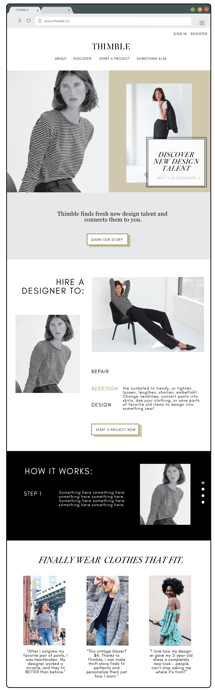
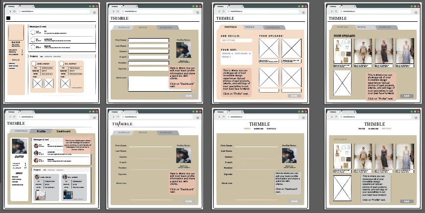
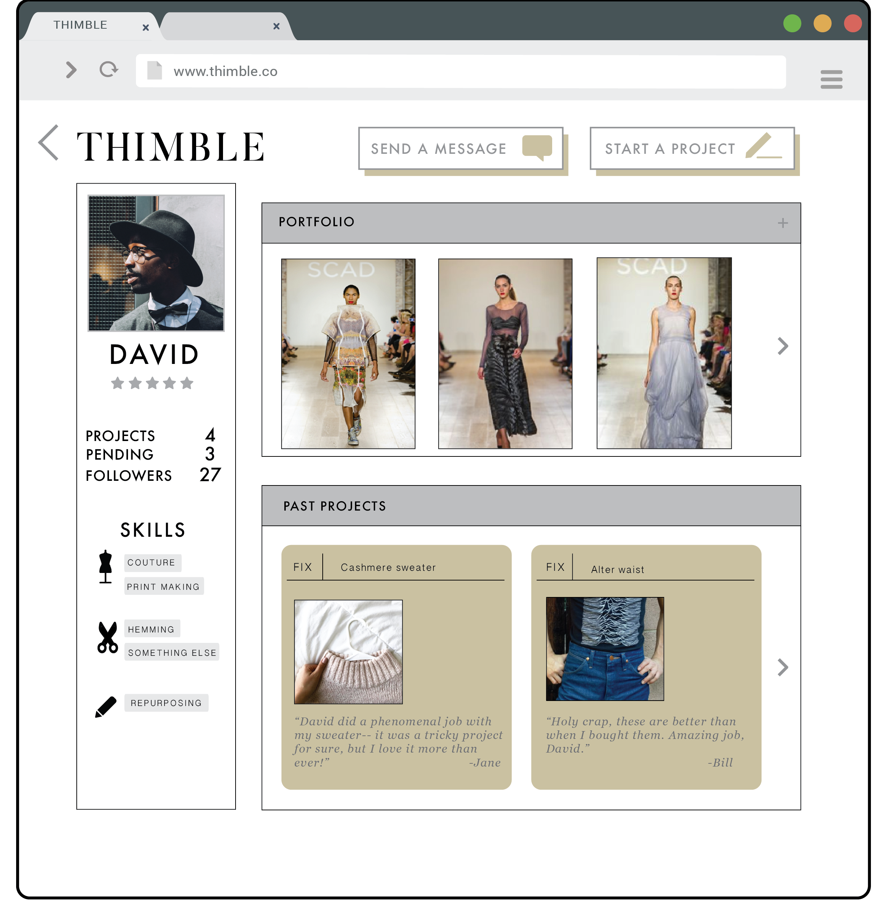
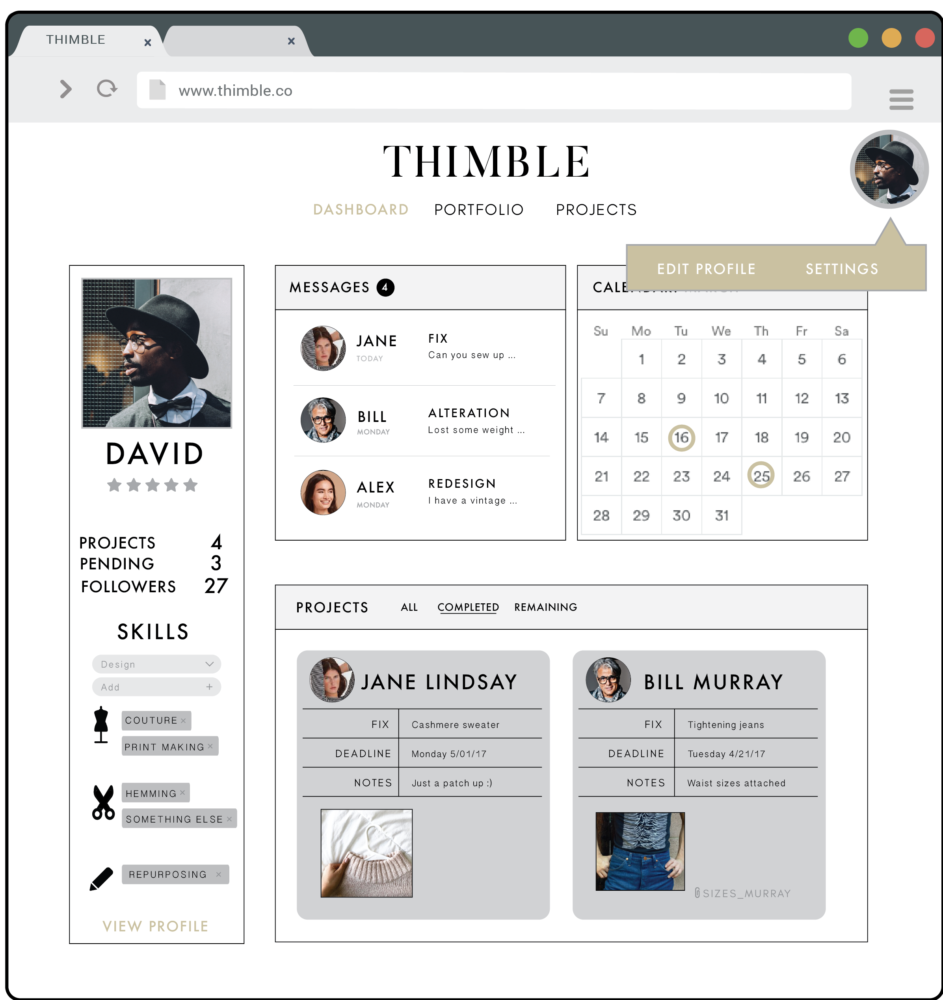
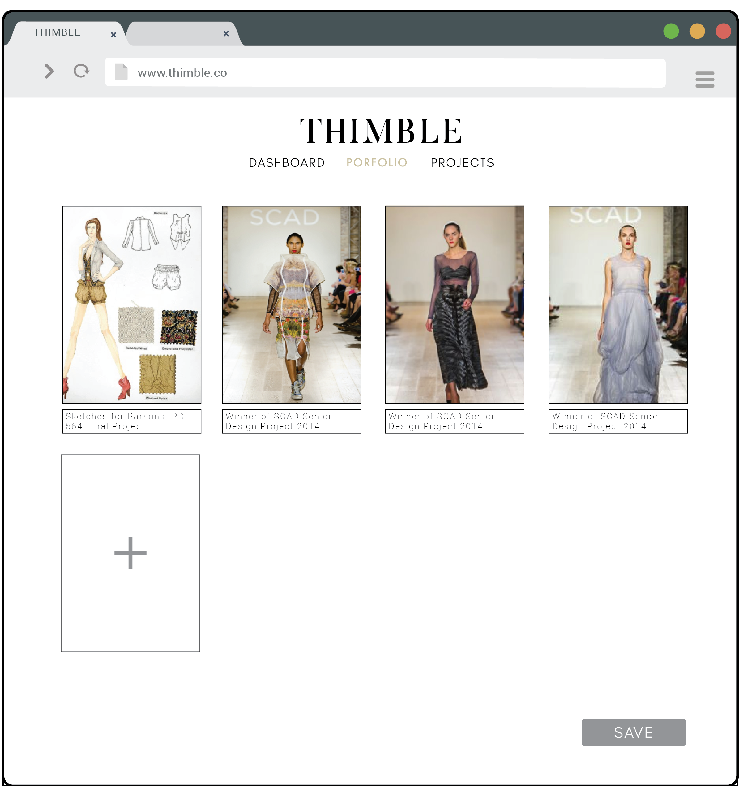
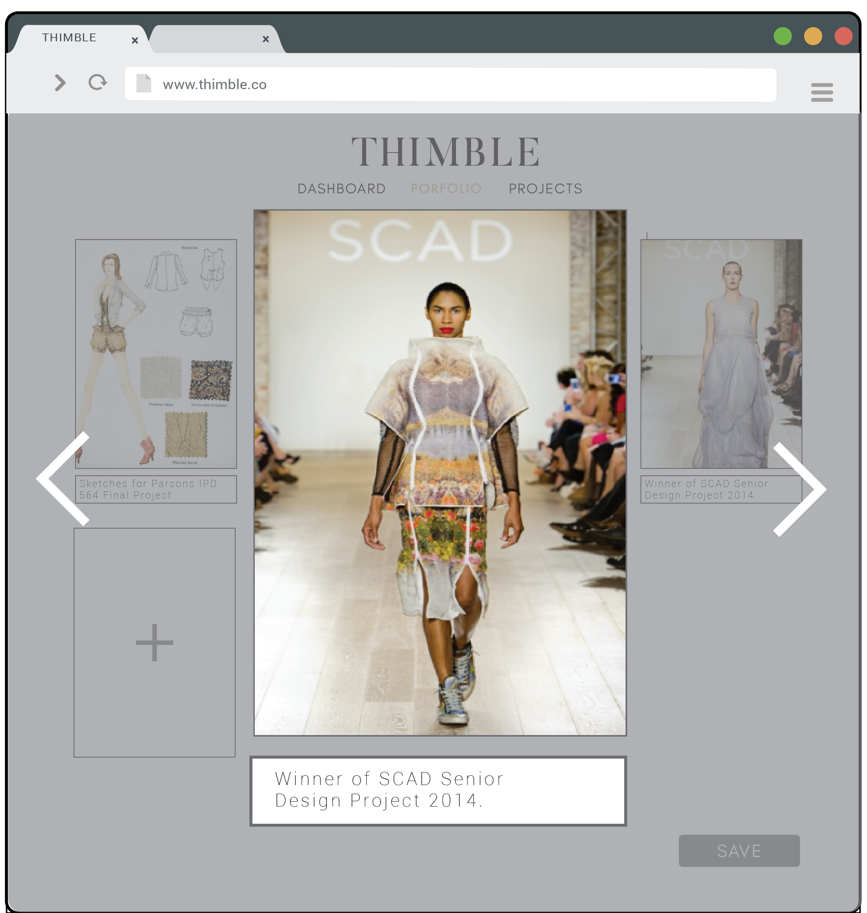

Some creative assets done for NOMsense Bakery: Invitations,


After multiple iterations, we settled on a color pallet and font family. Voila!

Next was the wireframing for the webapp. The process of setting up customers and designers, while seemingly simple, required an efficient use of pages: how could we minimize confusion when setting up profiles or managing projects? The process looks a bit like this:

And ends something like this! A designer's profile view of himself is on the left; a customer's view of a designer on the right (note that, for the designer, "edit profile" and "settings" are less common activities, and therefore do not clutter his dashboard as options until he clicks on his own profile icon.)
Below, a simple interaction of how it might look to click through a designer's portfolio.



